演唱類【出版獎】
6 個獎項年度專輯獎

不完全自救手冊
陳建騏、陳綺貞、陳珊妮、落日飛車曾國宏等 29 組音樂人

OUTCOMES 結果論
J.Sheon

隱形色
林家謙

夢想家
方大同
好聲豪氣
呂士軒
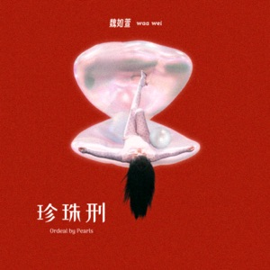
珍珠刑
魏如萱

像咱這款人
楊肅浩

物件，所在
FunkyMo

罐頭塔
陳以恆
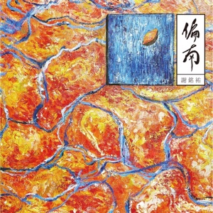
偏南
謝銘祐

滴滴答答
王彙筑
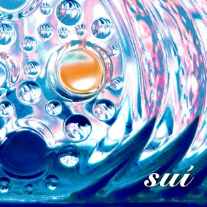
Suí 水
李竺芯

夢裡夢外
秋林

純粹污垢
粹垢TRAEGO

牛騷 New Soul
黃子軒
亻厓个房間
羅思容、米莎、楊淑喻（吉那）、邱淑蟬

洄游
林鈺婷
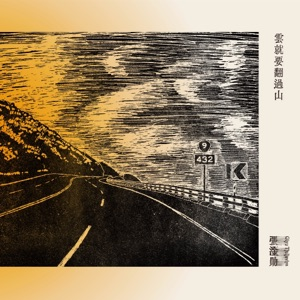
雲就要翻過山
張淦勛

kamawan za kavung 像帽子一樣
Morikilr 孔亞明

QUEENDOM
阿布絲・塔娜比瑪
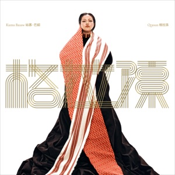
Qrasun 格拉孫
姑慕·巴紹

mudalrep 靠近
桑布伊
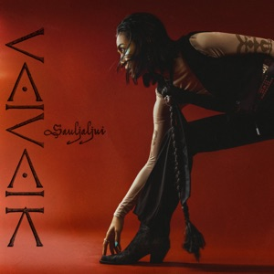
VAIVAIK 尋走
戴曉君
年度歌曲獎
BUNUN 布農
阿布絲・塔娜比瑪

手機錢包鑰匙菸
美秀集團、盧廣仲
偏南風
謝銘祐

Young Man
HYUKOH、落日飛車

星期五晚上
Energy

才二十三
方大同
這樣很好
陳奕迅
足芳足芳
李竺芯
最佳華語專輯獎
不完全自救手冊
陳建騏、陳綺貞、陳珊妮、落日飛車曾國宏等 29 組音樂人
OUTCOMES 結果論
J.Sheon
隱形色
林家謙
夢想家
方大同
好聲豪氣
呂士軒
珍珠刑
魏如萱
最佳台語專輯獎
像咱這款人
楊肅浩
物件，所在
FunkyMo
罐頭塔
陳以恆
偏南
謝銘祐
滴滴答答
王彙筑
Suí 水
李竺芯
最佳客語專輯獎
夢裡夢外
秋林
純粹污垢
粹垢 TRAEGO
牛騷 New Soul
黃子軒
𠊎个房間
羅思容、米莎、楊淑喻（吉那）、邱淑蟬
洄游
林鈺婷
最佳原住民語專輯獎
雲就要翻過山
張淦勛
kamawan za kavung 像帽子一樣
Morikilr 孔亞明
QUEENDOM
阿布絲・塔娜比瑪
Qrasun 格拉孫
姑慕·巴紹
mudalrep 靠近
桑布伊
VAIVAIK 尋走
戴曉君
演唱類【個人獎】
14 個獎項最佳作曲人獎

知更
JUD 陳泳希

修理車
FunkyMo

高麗菜粥
王彙筑、洪佩瑜
入圍：王彙筑
有色眼鏡
林家謙
才二十三
方大同
鬼才出道
王若琳
最佳作詞人獎
南迴之子
張淦勛

允許萬物破碎
柏霖PoLin
入圍：李格弟
偏南風
謝銘祐
有色眼鏡
林家謙
入圍：林夕
才二十三
方大同
足芳足芳
李竺芯
最佳編曲人獎
BUNUN 布農
阿布絲・塔娜比瑪
入圍：張少瑜
Qrasun 讚美
姑慕·巴紹、林啟安
入圍：林啟安
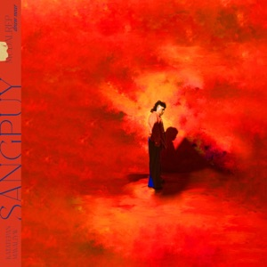
靠近 mudalrep
桑布伊
入圍：鍾興民
Dipin Kari Tang 麵包 咖哩 刺蝟
戴曉君、泰武古謠傳唱
入圍：戴曉君、吳蒙惠
二周目
呂士軒
入圍：呂尚霖
鬼才出道
王若琳
入圍：王若琳、Asher Fulero、Peter Knudsen、Bill Athens、Micah Kassell、高杰 J Geddes
最佳專輯製作人獎
雲就要翻過山
張淦勛
入圍：高潮（林志仁）

當我不敢說
JUD 陳泳希
入圍：王治平
AAA
HYUKOH、落日飛車
入圍：吳赫、曾國宏
隱形色
林家謙
好聲豪氣
呂士軒
入圍：呂尚霖、呂士軒
Suí 水
李竺芯
入圍：鍾興民、李竺芯
最佳單曲製作人獎
皇民戰士大軍伕
楊肅浩
入圍：陳建瑋
BUNUN 布農
阿布絲・塔娜比瑪
入圍：海大富

COCOCO
GENBLUE幻藍小熊
入圍：于傳勇、金智湖
靠近 mudalrep
桑布伊
入圍：鍾興民

臺灣文蛤 Huh?
A_Root 同根生
入圍：柯智豪
最佳華語男歌手獎
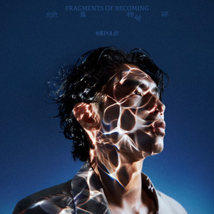
允許萬物破碎
柏霖PoLin

沒事的
蕭煌奇
隱形色
林家謙
好聲豪氣
呂士軒
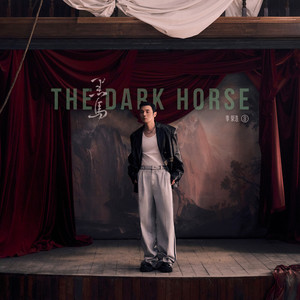
黑馬
李榮浩
最佳華語女歌手獎
不夠善良的我們：戲劇音樂設計專輯
蔡健雅
雙生火焰
戴佩妮
V
陳忻玥

Made For You
Karencici
珍珠刑
魏如萱
最佳台語男歌手獎
像咱這款人
楊肅浩
物件，所在
FunkyMo
罐頭塔
陳以恆
偏南
謝銘祐

海口
馬克SAVAGE.M
最佳台語女歌手獎

戲台
蔡秋鳳

Lady Pum Pum
林美秀
滴滴答答
王彙筑
Suí 水
李竺芯
演一首歌
詹雅雯
最佳客語歌手獎
夢裡夢外
秋林
純粹污垢
粹垢
牛騷 New Soul
黃子軒
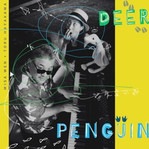
親愛的企鵝
米莎
洄游
林鈺婷
最佳原住民語歌手獎
kamawan za kavung 像帽子一樣
Morikilr 孔亞明
QUEENDOM
阿布絲・塔娜比瑪
Qrasun 格拉孫
姑慕·巴紹
mudalrep 靠近
桑布伊
VAIVAIK 尋走
戴曉君

全村的希望
曾妮 Dremedreman
最佳樂團獎

開往天堂的海盜船
無妄合作社（郭力瑋、謝碩元、林玉）
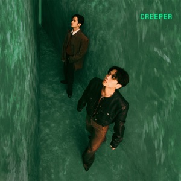
Creeper
JADE（魯綱宇、黃亮傑）
美秀集團
美秀集團（王鍾錡、林冠佑、黃柏翰、劉修齊、康婷文）
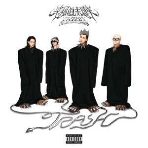
幸福的末班車
TRASH樂團（林志融、林頤原、鄧博文、王韋翔）
AAA
HYUKOH、落日飛車（曾國宏、吳赫、陳弘禮、任童健、林賢帝、王少軒、JNKYRD 권성철、羅尊龍、李仁雨、黃浩庭）

浪漫野球戰士列傳
八十八顆芭樂籽（李奇明、李敘忻、陳冠伶、李東祐）
最佳演唱組合獎

I Dig You
恐龍的皮（暴龍、三角龍）

結伴 (豪華版)
動力火車（尤秋興、顏志琳）
Here I Am
Energy（葉乃文、張書偉、郭葦昀、謝坤達、蕭景鴻）

Deus Ex Machina
珂拉琪（夏子、王家權）
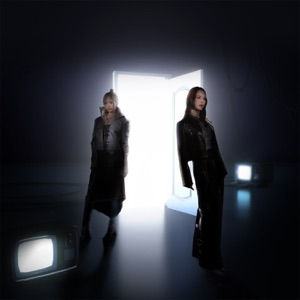
RUN, DON'T WALK
丹丹猫猫（aDAN 薛詒丹、Miao Miao Flow 盧思蒨）
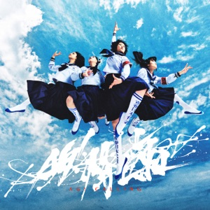
AG! Calling
Atarashii Gakko!新學校領袖（Mizyu、Rin、Suzuka、Kanon）
最佳新人獎
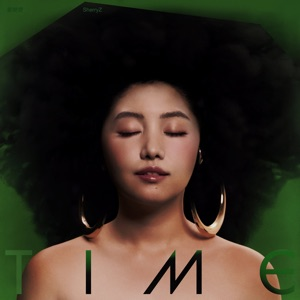
Time
鄭雙雙
雲就要翻過山
張淦勛
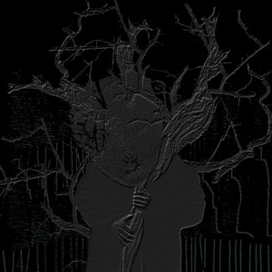
愚公
someshiit 山姆
當我不敢說
JUD（陳泳希）
Qrasun 格拉孫
姑慕·巴紹
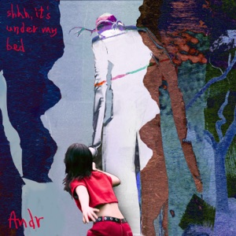
shhh, it’s under my bed
Andr（陳德安）
演奏類【出版獎】
1 個獎項演奏類最佳專輯獎

OR 手術劇院
楊又臻爵士大樂團
練習曲
張貝芝

胎內
呂紹淳

世間
覺者

青雲之上
鍾興民
演奏類【個人獎】
2 個獎項演奏類最佳專輯製作人獎

甘 Aftertaste
Debby Wang 王思雅
入圍：程杰
練習曲
張貝芝
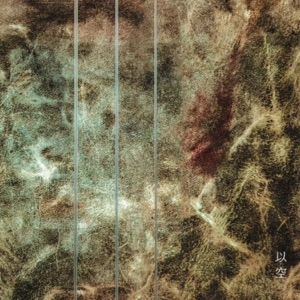
以空
以空、蘇紫旭、安志華
入圍：蘇紫旭、安志華
胎內
呂紹淳
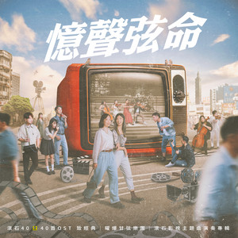
憶聲弦命 滾石 40【40 首 OST 致經典】 滾石影視主題曲演奏專輯
曜爆甘弦樂團
入圍：蔡曜宇
演奏類最佳作曲人獎
手術劇院
楊又臻爵士大樂團
入圍：楊又臻 Tracy Yang
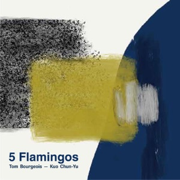
5 Flamingos
湯姆·布爾喬斯、郭俊育
入圍：湯姆·布爾喬斯

Étude No.1 in D - Carpark
張貝芝、李駿銚、曾浩威、崔展鴻、黎逸晞、陳駿軒
入圍：張貝芝
鳶飛
以空、蘇紫旭、安志華
入圍：翁曲弦、蘇紫旭、安志華、韓舒凡

參螺旋
幾何碼
入圍：王育嘉、簡聿民、林均憲
技術類【出版獎】
3 個獎項最佳MV獎
Antenna
HYUKOH、落日飛車
導演：rafhoo
製作名單
入圍導演：rafhoo
Young Man
HYUKOH、落日飛車
導演：Pennacky
製作名單
入圍導演：Pennacky
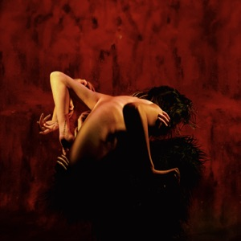
基礎憂鬱
wannasleep、鄭宜農
導演：自動鮪魚
製作名單
入圍導演：自動鮪魚

Dab Hi
NaraBara
導演：陳則安
製作名單
入圍導演：陳則安
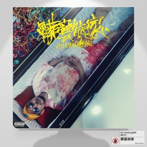
可夢
MC HotDog熱狗
導演：林宏叡 Reago
製作名單
入圍導演：林宏叡 Reago

Buzz
NIKI
導演：Isaac Ravishankara
製作名單
入圍導演：Isaac Ravishankara
最佳演唱錄音專輯獎

My Nova
柯智棠
製作名單
錄音者：錄音：林尚伯、高勤倫、朱品豪、陳以霖、蔡周翰
混音：王昱辰、黃文萱、沈冠霖、陳君豪
母帶後製：Alex WhartonCreeper
JADE
製作名單
錄音者：錄音：蔡周翰、嘟嘟、邱建鈞、錢煒安、莊鈞智
混音：周已敦
母帶後製：周已敦
南洋探險隊
雷擎
製作名單
錄音者：錄音：徐振程、錢煒安、陳祺龍、陳逸宏、陳以霖、蔡周翰、朱品豪、Audry Garcia Dionsio、雷擎
混音：徐振程、錢煒安、陳祺龍、林漢庭、黃文萱
母帶後製：Alex WhartonAAA
HYUKOH、落日飛車
製作名單
錄音者：錄音：SangHyun Cho、HyeSeok Oh、王昱辰、YJ (Moollon)、劉先彬
混音：Norman Nitzsche
母帶後製：Norman Nitzsche珍珠刑
魏如萱
製作名單
錄音者：錄音：陳以霖、錢煒安、于世政、林尚伯、蔡周翰、朱品豪、于京延
混音：Wayson Scream、黃少雍、Simon Li、莊鈞智、黃文萱、林正忠、陳君豪
母帶後製：Wayson ScreamVILLAIN 反派角色
朱婧汐
製作名單
錄音者：錄音：Chace、Alice
混音：Chace
母帶後製：Chace
最佳演奏錄音專輯獎
OR 手術劇院
楊又臻爵士大樂團
製作名單
錄音者：錄音：Brian Montgomery
混音：Brian Montgomery
母帶後製：Mark Wilder甘 Aftertaste
王思雅
製作名單
錄音者：錄音：蔡周翰
混音：程杰
母帶後製：Zino Mikorey練習曲
張貝芝
製作名單
錄音者：錄音：單為明、于世政、陳佳穎
混音：單為明
母帶後製：Jeff Lipton、Maria Rice、Costanza Tinti
7 Seven
胡洋
製作名單
錄音者：錄音：李遊、張宇涵、李楊
混音：李遊
母帶後製：李遊
Ctrl+Z
Pluto Potato
製作名單
錄音者：錄音：蔡周翰
混音：程杰、陳君豪、符家寶
母帶後製：Jeff Lipton
技術類【個人獎】
1 個獎項最佳裝幀設計獎
物件，所在
FunkyMo
入圍：劉悅德

王品流 Freestyle
Leo王、PiNkChAiN、Sogare
入圍：于薇
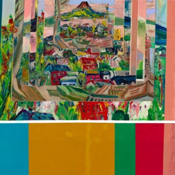
你在注視那遙遠的地方
當代電影大師
入圍：吳建龍、畢展熒、蔡偉群

Jug Band Millionaire
泥灘地浪人
入圍：黃家賢、葉昶利
AAA
HYUKOH、落日飛車
入圍：Chanhee Hong、Na Kim
評審團獎
1 個獎項評審團獎
夢想家
方大同
特別貢獻獎
1 個獎項特別貢獻獎
翁孝良
入圍：翁孝良
馬兆駿
入圍：馬兆駿
找不到符合的作品，換個關鍵字試試。